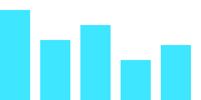
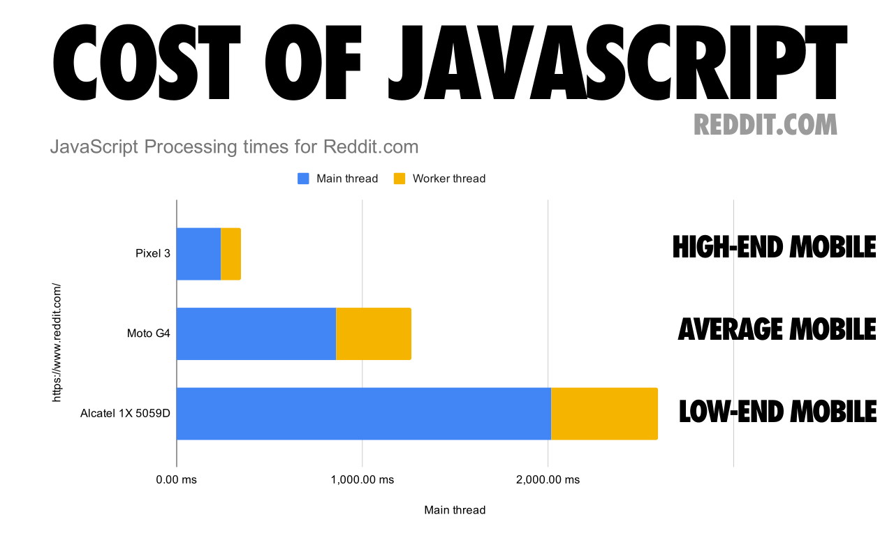

Materials: 09-draw-measure-borrow: git pull now. Today needs Chrome or Edge for the Performance panel.
<svg>
2d
act 01
Draw
0:04 – 0:16three surfaces for a picture
HTML boxesSVGviewBoxpathcanvasdevicePixelRatiopixelsaccessibility
The same bar chart, three times
Boxes, SVG, canvas
HTML + CSS elements
SVG elements
canvas pixels · JS only

HTML and inline SVG become elements in the DOM: styled by CSS, clickable. A canvas is one element; what you draw on it is pixels. Open all three and look in the Elements panel.
Surface 1 · boxes
You already draw with HTML
A bar is a div with a height. A row of bits is a grid of 8 cells.
Text, wrapping and fonts for free. With the right elements (buttons, tables), focus and screen readers too.
Layout does the positioning; you set sizes in % or with custom properties.
Good when the picture is boxes that line up: bars, grids, tables.
Two ways to store a picture
Vector: a list of shapes. Bitmap: a grid of pixels.
SVG · a circle in a 24 × 24 viewBox · shown at 240 px
Stores shapes: "a circle at (12, 12), radius 9".
Turned into pixels when drawn, at the screen's resolution: sharp at any size.
Size grows with the number of shapes. SVG, font outlines.
PNG · the same circle, 24 × 24 pixels · shown at 240 px
Stores pixels: one colour per cell; in memory, 4 bytes each (RGBA).
Fixed resolution: enlarged, it turns blocky or blurry.
Size grows with width × height. PNG, JPEG, a canvas.
Surface 2 · SVG
SVG: a markup language for vector graphics
Scalable Vector Graphics: XML-based markup that describes shapes. The browser draws them sharp at any size.
Inline in HTML, every tag becomes a DOM element: in the Elements panel, selectable by CSS, with its own events.
As a file (<img src="chart.svg">) it's an image: your page can't reach the elements inside.
viewBox="0 0 400 200": your units, scaled to any size on screen. y grows downwards from (0, 0) at the top left.
Live · a path from an array
A line chart is one path
SVG · the d attribute of a path
One letter per command, then its numbers
M x y
move the pen, don't draw
L x y
straight line to (x, y)
H x · V y
horizontal · vertical line
C x1 y1 x2 y2 x y
cubic Bézier, two control points
Q x1 y1 x y
quadratic Bézier, one control point
A rx ry rot large sweep x y
elliptical arc
Z
line back to the start: closed
Uppercase: absolute coordinates in the viewBox. Lowercase (m l h v c q a z): relative to where the pen is.
Quick check · no error, no circle
Why is nothing drawn?
createElement makes an HTML element called "circle": an HTMLUnknownElement. It sits in the SVG and draws nothing.
createElementNS(SVG_NS, "circle") with SVG_NS = "http://www.w3.org/2000/svg". Or markup: innerHTML on the <svg> parses as SVG.
Surface 3 · canvas
A canvas holds a bitmap: draw everything, every time
Trap · on high-density screens
The blurry canvas
A canvas has two sizes. CSS size: how big it looks. width / height attributes: how many pixels it stores.
On a 2× screen, a 400 px wide canvas shown 400 CSS px wide is stretched over 800 real pixels. Text and thin lines go soft.
Clicks · SVG vs canvas
Which dot did I click?
SVG: the browser finds the shape
canvas: you find it, with maths
SVG: each shape is an element, so event.target is the circle you clicked. Canvas: the event's target is the whole canvas; which dot is under the pointer is your code.
Accessibility
Pictures need words
svg
role="img" and a <title> as the first child: one sentence of what it shows.
canvas
Content between <canvas>…</canvas> is the fallback, or an aria-label. Interactive canvas needs real buttons next to it.
the honest one
A <table> of the same numbers, in a <details>. Readable, searchable, copyable.
Say what the picture means: "Visitors peaked at 21:00 with 140 per 15 minutes", not "a line chart".
Quick check · on your phone first
HTML, SVG or canvas?
Answer in quiz/pick-a-surface.html with the code on the board. Then we look at the results, and reveal here.
The 64 bits of a JavaScript number, click to flip one → HTML: a grid of 64 buttons
50 000 cars on a ring road → canvas: too many elements
A line chart with a tooltip per point → SVG: an element per point, with events
A photo, before and after a filter → canvas: per-pixel access
A graph of 30 nodes and their links, draggable → SVG: drag events per node
How many things? Thousands → canvas. Events or CSS per thing? → SVG or HTML. Pixels? → canvas. Boxes that line up? → HTML.
16.7
ms
act 02
Measure
0:31 – 0:47find out where the time goes
main threadframe budgetPerformance panelCPU throttlingflame chartlong tasksforced reflowPerformance monitor
A page from the market · the sales log
100 000 sales. Type one letter in the search.
The page freezes for seconds. The text field doesn't show the letter until the list comes back.
Is it the filter? The DOM? The sidebar? Guessing is how you lose an afternoon.
D3 7.9.0 minified (280 kB, 92 kB gzipped) and a 93 kB JPEG, each loaded alone. Chrome 149, M-series MacBook, median of 5 runs.
The device matters as much as the code
Reddit's JavaScript: 0.35 s on a fast phone, 2.6 s on a cheap one

JavaScript processing for reddit.com · blue: main thread · yellow: worker thread. Source: V8, The cost of JavaScript in 2019 · CC BY 3.0
Lecture 8, again
Your JavaScript and the page's drawing share one thread
The main thread runs your handlers, recalculates styles, lays out and records paint. One thing at a time.
A screen at 60 Hz wants a new frame every 16.7 ms; at 120 Hz, every 8.3 ms.
While your handler runs, no other handler, no style or layout update runs: keystrokes and clicks wait. (Scrolling and transform / opacity animations can go on: another thread, the compositor, runs them.)
JSstylelayoutpaintidle
A frame that fits: about 10 ms of work, the rest idle.
JS · ≈ 1 sstyle + layout · ≈ 1.5 spaint · ≈ 0.5 s
The sales log, one keystroke: about 3 s before the letter shows, some 180 frames that never happened.
What the browser does to show a change
One frame: script, style, layout, paint, composite
JavaScriptyour handler changes the DOM or a class
Stylewhich rules match which elements
Layoutsizes and positions of every box
Paintpixels for text, colours, borders
Compositelayers put together on the GPU
Change width, top, text, add an element → layout and everything after it.
Change color, background → paint and after.
Change transform, opacity → often composite only. That's why Friday animated those two.
DevTools → Performance
Record, do the slow thing, stop
0 s1 s2 s3 s
Main
Task · 2.75 s
Event: keypress
Event: textInput
Event: input
Recalculate style
Layout
Function call
render
row
topItems
Task · 0.5 s
Pre-paint
3 · ↑ y = the call stack2 · wide = slow1 · long tasks: red corners ↑
The Performance panel's settings: CPU throttling 4× or 6×.
Developer machines are fast. Your users' phones and older laptops are not: the Reddit chart, 0.35 s vs 2.6 s.
Record with throttling on: at 4×, a 30 ms problem becomes a 120 ms one you can see.
Network throttling (Fast 4G, Slow 4G) is the same idea for downloads: Act 4.
rule of thumb
Under 100 ms feels instant. Chrome's Interaction to Next Paint (INP) metric rates over 200 ms "needs improvement", over 500 ms "poor".
Reading the recording
x is time, y is the call stack, width is cost
Find the long task. Grey bar with a red corner at the top of the Main track.
Look below it. Each row is one level deeper in the call stack: render calls row 87 554 times. The profiler samples, so row shows as slivers or merged bars, not 87 554 bars.
Ask "which colour?" Yellow: your JS. Purple: the browser laying out what you built.
Bottom-Up tab: functions sorted by self time, the time spent in the function itself, not its callees.
self vs total
Total time includes everything a function calls; self time is its own lines only. Big total, small self: the cost is further down. Follow it until the self time is big.
Find the long task. Read its colours. Compare with the guesses from the start.
Bottom-Up: which function has the most self time?
When you want a number
Measure in code, see it on the timeline
performance.now(): milliseconds with fractions, since the page started loading.
console.time / timeEnd: the same, with a label.
mark / measure: named bars in the Timings track of the recording.
DOM work isn't finished when the call returns: layout happens later. Only the recording shows that part.
Forced layout · also called forced reflow
Some reads make the browser lay out the page right now
Normally the browser lays out once per frame, after your JavaScript has finished.
Some properties and methods return sizes or positions. If the page changed since the last layout, reading one makes the browser do the layout now, in the middle of your code.
In a recording: a purple Layout inside your function's call stack, not after it.
CPU usage: is the page busy when nobody touches it? (An animation that never stops.)
DOM nodes: the sales log has about a million (elements and text).
JS heap size, event listeners: should go up and down, not only up.
Layouts / sec, style recalcs / sec while scrolling or animating.
only ever climbing?
A leak. A common one: render() adds a listener to an element that survives the render (the board, window), so every render adds one more (the game jam trap). The page gets slower the longer it runs.
DevTools → Network
Downloads cost time too
Waterfall: when each file started and finished. Files that wait for other files form a staircase.
Transferred vs resources size at the bottom: compressed over the wire, uncompressed in memory.
Throttling: Fast 4G, Slow 4G, Offline. Disable cache to see a first visit.
Your own files are small. The libraries you import may not be: Act 4.
exercise
Exercise 2 · pairs · 15 min
Profile it
Find, don't fix. Three slow pages, one problem each.
For each: record with CPU 4×, find the long task, name the function or the browser step.
Write one sentence: "X takes N ms because Y."
Stretch: the Performance monitor's DOM node count, before and after a search.
Time from the action to the next frame. Reference fixes, Chrome 149 on an M-series MacBook, CPU throttled 4×; your laptop's numbers will differ, the ratios less so.
npm is the registry where JavaScript packages are published. Millions of them.
jsDelivr, unpkg, esm.sh fetch packages from the npm registry (their origin) and serve any file in them through a CDN. (cdnjs hosts a curated list instead.)
Remove the file part and jsDelivr lists every file in the package: cdn.jsdelivr.net/npm/d3@7.9.0/
Way 1 · the oldest
<script src>: the library becomes a global
The file is a UMD build: it puts one global on window (L, Chart, d3).
Order matters: the library's tag before yours.
Globals share one namespace with your scripts: a library's d3 and your own d3 variable, and one silently hides or overwrites the other.
Some libraries need their CSS too.
Way 2 · ES modules
Import from a URL, in a module
No globals: the names exist in this module only (Lecture 5).
Named{ formatHex }, defaultconfetti, namespace* as d3: which one works depends on what the package exports. The README says.
Only inside type="module".
Uncaught SyntaxError: Cannot use import statement outside a module
Way 3 · what the docs show
Bare names fail in the browser
Uncaught TypeError: Failed to resolve module specifier "d3". Relative references must start with either "/", "./", or "../".
"d3" is a bare specifier: a package name, not a URL. Node and bundlers know where npm packages live (node_modules). The browser only knows URLs.
One place for every dependency
An import map: names to URLs
Every module on the page can now import … from "d3", as the docs write it.
Every version in one file. Upgrading is one line.
It must come before the module scripts that use it.
A URL or a local path: the code doesn't care which.
One package, several builds
Which file do I load?
build
looks like
in a browser
ES module
export function … · *.mjs · dist/*.esm.js
import, in type="module"
UMD / IIFE
sets window.Something · *.umd.js · *.iife.js
<script src>
CommonJS
module.exports · require(…)
no: require / module is not defined
Where to look: the README's CDN or browser section · the exports, module, main fields in package.json · or let +esm / esm.sh convert it.
Look before you choose
What a dependency costs, in two panels
network
Filter by JS, disable cache, reload. How many requests did one import start? How many kB transferred? One converted module can import dozens more (d3@7.9.0/+esm: 30): a waterfall.
performance
Record and reload. Compile and Evaluate (Script or Module) in yellow: what the library costs on the main thread before your code runs.
A 500 kB library to format one date is a bad trade. Intl.DateTimeFormat is free.
Semantic versioning
Pin the version, or the code changes under you
7major · breaks things.9minor · adds things.0patch · fixes things
…/npm/d3/+esm
latest. Can become a new major at any moment.
…/npm/d3@7/+esm
the newest 7.x. Safer, still moves.
…/npm/d3@7.9.0/+esm
always version 7.9.0. Pin.
Trap · the code is from another era
The AI's code was right, for D3 v3
Uncaught TypeError: Cannot read properties of undefined (reading 'linear')
d3.scale.linear() is D3 v3. Since v4 (2016) it's d3.scaleLinear(). Models learned from years of old examples.
Compare the version the code assumes with the version you load. Ask for the version explicitly.
Big jumps have a migration guide or a CHANGELOG.md. Read the one for your major.
Trap · the package that isn't
Check that the package exists, and is the one you think
Models sometimes invent plausible package names.
People register those names and publish malware into them (slopsquatting). Typos work too (typosquatting).
Before you add one: the npm page. A linked repository, weekly downloads, the last publish date, the maintainers.
two minutes
npmjs.com/package/name → repository → stars, issues, last commit. A package with 12 downloads and no repository is not your chart library.
Security
A library runs with all of your page's rights
It can read the DOM and localStorage, send fetch requests, log keystrokes. There's no sandbox between your code and theirs.
Subresource integrity: the browser refuses the file if a single byte changed.
Offline, frozen
Vendor it: a copy in your repository
# download the exact file
curl -L -o vendor/d3-7.9.0.mjs \
https://esm.sh/d3@7.9.0/es2022/d3.bundle.mjs
# the import map points at it"d3": "./vendor/d3-7.9.0.mjs"
Works offline, on any Wi-Fi, forever.
The version is frozen and visible in the repository.
Check it's one file: jsDelivr's d3@7.9.0/+esm is 1.5 kB that imports 30 more. esm.sh's d3.bundle.mjs has everything.
CSS, fonts, and data files too.
The same ideas, automated
What we did by hand, npm and a bundler do for you
today, by hand
with npm and a bundler
the import map
→
dependencies in package.json
an exact version in the URL
→
the lockfile, package-lock.json
vendor/
→
node_modules/ (not committed)
the CDN converting to ESM
→
the bundler resolving bare names
the order of <script> tags
→
the dependency graph
checking the npm page
→
npm audit, Dependabot
npm and a bundler
What npm and a bundler add
npm install d3: into node_modules, exact version in the lockfile. Commit the lockfile.
^7.9.0: any 7.x from 7.9.0. ~7.9.0: only 7.9.x.
A build tool like Vite (bundling with Rollup and esbuild): dev server, bare names, TypeScript, minifying, dropping unused code.
The output is still static HTML, CSS and JS.
Next: your own code as packages, and frameworks built on all of this.
Working with an assistant
Tell your AI how this project loads code
# AGENTS.md## Dependencies
- No build step. No npm install.
- Libraries load through the import map
in index.html, from vendor/.
- Exact versions only: d3 7.9.0.
Use the API of that version.
- Ask before adding a dependency.
Many coding assistants read a file like AGENTS.md (or CLAUDE.md) from the repository before they write.
Without it, they often assume npm, a bundler, and whatever version they remember.
It's also documentation for whoever reads the repository.
Today, in one slide
Draw, measure, borrow
draw
Boxes for grids, SVG for shapes with events, canvas for thousands and for pixels. One render(state).
measure
Record with CPU 4×. Long task, colours, Bottom-Up. Read all, then write all.
do less
Less often, fewer things, elsewhere, later, once. Virtualise only what needs it.
borrow
A CDN URL with an exact version. An import map. Vendored to work offline.
trust
Check the package and the major version. Integrity hashes. It runs with your rights.
next
npm, lockfiles and bundlers do this at scale. Same ideas.